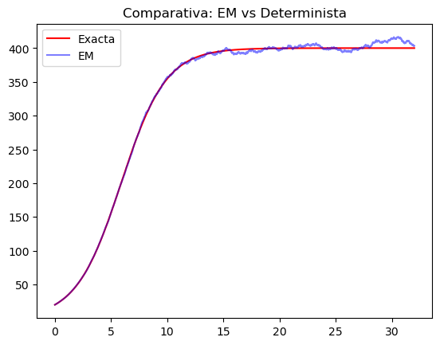
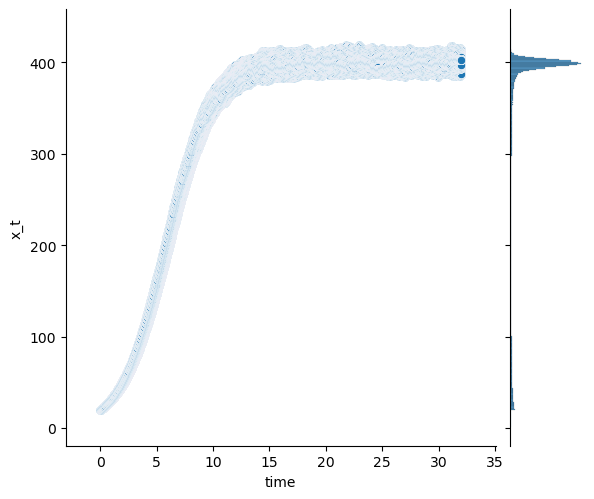

13 Proyecto Final
13.1 objetivo:
Nuestra referencia principal sera el articulo “Analytic Solution of a Stochastic Richards Equation driven by Brownian motion” para encontrar la solución de la ecuación de Richard y también contrastar el comportamiento de la realización de la solución respecto a su contraparte determinista.
13.2 Introducción:
Uno de los modelos más famosos de la dinámica de poblaciones es la ecuación logística que se propuso por primera vez por P F Verhulst en 1838. La ecuación logística, también conocida como ecuación de Verhulst, viene dada por la ecuación diferencial ordinaria \[
dN(t)=rN(t)\left(1-\frac{N(t)}{K}\right)dt
\] donde \(N(t)\) es el tamaño de la población en el momento \(t\), \(r\) es la tasa de crecimiento intrínseco y \(K> 0\) es la capacidad de carga/nivel de saturación.
En 1959, FJ Richard en propuso la siguiente modificación de la ecuación logística para modelar el crecimiento de poblaciones biológicas: \[
dN(t)=rN(t)\left(1-\left(\frac{N(t)}{K}\right)^{\alpha}\right)dt,
\tag{13.1}\]
con la condición inicial \(N(0)=N_{0}\), se asume que \(0<N_{0}<K\) y \(\alpha>0\) es el exponente de la desviación de la curva logística estándar.
Ahora construimos el modelo estocástico de Richard insertando el término de ruido multiplicativo en el modelo determinista (Equation 13.1) para obtener una ecuación aleatoria. Escribimos \(N_{t}\) en lugar de \(N(t)\) para enfatizar que \(N_{t}\), ya no es una función determinista sino una variable aleatoria, el ruido como el ruido blanco gaussiano \(dB_{t}\) y obtenemos la ecuación diferencial estocástica en el sentido de Itô \[
dN(t)=rN(t)\left(1-\left(\frac{N(t)}{K}\right)^{\alpha}\right)dt+\sigma N_{t}dB_{t}
\tag{13.2}\] donde \(\sigma\) es el coeficiente de difusión que mide el tamaño de la fluctuación del ruido. Para resolver la ecuación diferencial estocástica (Equation 13.2) necesitamos algunos resultados del cálculo estocástico de Itô.
Primero, recordemos que un proceso estocástico \(\left(X_{t}\right)_{t\geq 0}\) se llama adaptado si existe un espacio de probabilidad filtrado \(\left(\Omega,\mathcal{F},\left(\mathcal{F}_{t}\right)_{t\geq 0},\mathbb{P}\right)\) tal que, para cada \(t\geq 0\) la variable aleatoria \(X_{t}\) está definida en \(\left(\Omega,\mathcal{F},\mathbb{P}\right)\) así como \(\mathcal{F}_{t}\)-medible. Un proceso estocástico adaptado \(\left(X_{t}\right)_{t\in [0,T]}\) se llama proceso de Itô si se puede escribir de la forma \[
X_{t}=X_{0}+\int_{0}^{t}b\left(s\right)\mathrm{d}s+\int_{0}^{t}\sigma\left(s\right)\mathrm{d}B_{s},\,X_{0}=x_{0},\,t\in[0,T],
\] donde \(b\) y \(\sigma\) son procesos estocásticos adaptados que satisfacen \(\int_{0}^{t}|b(s)|ds<\infty\) y \(\int_{0}^{t}\sigma(s)^{2}ds<\infty\). El proceso \(\langle X\rangle_{t}:=\langle X,X\rangle_{t}=\int_{0}^{t}\sigma(s)^{2}ds\) es llamada la variación cuadrática de \(X\).
13.3 Desarrollo:
Para encontrar la solucion de la ecuación diferencial estocástica de Richard (Equation 13.2) primero necesitamos los siguientes dos Teoremas.
Theorem 13.1 Si \((X_{t})_{t\in[0,T]}\) es un proceso de Itô y \(F\in C^{1,2}([0,T],\mathbb{R})\), entonces \[ F(T,X_{t})-F(0,X_{0})=\int_{0}^{T}\frac{\partial F}{\partial x}(t,X_{t})dX_{t}+\int_{0}^{T}\frac{\partial F}{\partial t}(t,X_{t})dt+\frac{1}{2}\int_{0}^{T}\frac{\partial^{2} F}{\partial x^{2}}(t,X_{t})d\langle X\rangle_{t}. \]
Proof. Sea \(X_{t}\) un proceso de Itô dado por \[
X_{t}=X_{0}+\int_{0}^{t}b\left(s\right)\mathrm{d}s+\int_{0}^{t}\sigma\left(s\right)\mathrm{d}B_{s},\,X_{0}=x_{0},\,t\in[0,T].
\tag{13.3}\] Sea \(F\left(t,x\right)\), dado que \(F\in C^{1,2}\) entonces \(F\left(t,X_{t}\right)\) es también un proceso de Itô.
Usaremos la serie de Taylor y la tabla de Itô para encontrar la formula de Itô del proceso \(F\).
Primero recordemos que la serie de Taylor para dos variables, esta dada por, \[\begin{eqnarray*}
F\left(t,x\right) & = & F\left(t_{0},x_{0}\right)+\partial_{t}F(t_{0},x_{0})\left(t-t_{0}\right)+\partial_{x}F(t_{0},x_{0})\left(x-x_{0}\right)+\frac{1}{2}\left(\partial_{xx}^{2}F\left(t_{0},x_{0}\right)\left(x-x_{0}\right)^{2}\right.\\
& & \left.+\partial_{xt}^{2}F\left(t_{0},x_{0}\right)\left(t-t_{0}\right)\left(x-x_{0}\right)+\partial_{tx}^{2}F\left(t_{0},x_{0}\right)\left(x-x_{0}\right)\left(t-t_{0}\right)+\partial_{tt}^{2}F\left(t_{0},x_{0}\right)\left(t-t_{0}\right)^{2}\right).
\end{eqnarray*}\] Sea \(\Delta_{n}=\{t_{0}=0,t_{1},\dots,t_{n}=T\}\) una partición del intervalo \([0,T]\), entonces \[\begin{eqnarray*}
F\left(T,X_{t}\right)-F\left(0,X_{0}\right) & = & \sum_{i=1}^{n}\frac{\partial F}{\partial t}(t_{i-1},X_{t_{i-1}})\left(t_{i}-t_{i-1}\right)+\sum_{i=1}^{n}\frac{\partial F}{\partial x}(t_{i-1},X_{t_{i-1}})\left(X_{t_{i}}-X_{t_{i-1}}\right)\\
& & +\sum_{i=1}^{n}\frac{1}{2}\frac{\partial^{2}F}{\partial x \partial x}(t_{i-1},X_{t_{i-1}})\left(X_{t_{i}}-X_{t_{i-1}}\right)^{2}+\sum_{i=1}^{n}\frac{1}{2}\frac{\partial ^{2}F}{\partial x\partial t}(t_{i-1},X_{t_{i-1}})\left(t_{i}-t_{i-1}\right)\left(X_{t_{i}}-X_{t_{i-1}}\right)\\
& & +\sum_{i=1}^{n}\frac{1}{2}\frac{\partial^{2}F}{\partial t\partial x}(t_{i-1},X_{t_{i-1}})\left(X_{t_{i}}-X_{t_{i-1}}\right)\left(t_{i}-t_{i-1}\right)+\sum_{i=1}^{n}\frac{1}{2}\frac{\partial^{2}F}{\partial t \partial t}(t_{i-1},X_{t_{i-1}})\left(t_{i}-t_{i-1}\right)^{2}
\end{eqnarray*}\] Por otro lado, dado que, \(\left(t_{i}-t_{i-1}\right)=dt_{i}\), \(\left(t_{i}-t_{i-1}\right)\left(X_{t_{i}}-X_{t_{i-1}}\right)=dt_{i}dX_{t_{i}},\) y \(\left(X_{t_{i}}-X_{t_{i-1}}\right)=(dX_{i})^{2}\), de la tabla de Itô y de la ecuación (Equation 13.3), resulta para cada \(i=1,\dots,n\), \[
\left(X_{t_{i}}-X_{t_{i-1}}\right)^{2}=\sigma^{2}(t_{i})dt_{i},
\]
\[ \left(t_{i}-t_{i-1}\right)\left(X_{t_{i}}-X_{t_{i-1}}\right)=0, \]
\[ \left(X_{t_{i}}-X_{t_{i-1}}\right)\left(t_{i}-t_{i-1}\right)=0, \]
\[ \left(t_{i}-t_{i-1}\right)^{2}=0. \] Sustituyendo las relaciones anteriores se obtiene, \[\begin{eqnarray*} F\left(T,X_{t}\right)-F\left(0,X_{0}\right) & = & \sum_{i=1}^{n}\frac{\partial F}{\partial t}(t_{i-1},X_{t_{i-1}})dt_{i}+\sum_{i=1}^{n}\frac{\partial F}{\partial x}(t_{i-1},X_{t_{i-1}})dX_{t_{i}}\\ & & +\sum_{i=1}^{n}\frac{1}{2}\frac{\partial^{2}F}{\partial x \partial x}(t_{i-1},X_{t_{i-1}})\sigma^{2}(t_{i})dt_{i}. \end{eqnarray*}\] Haciendo \(\|\Delta_{n}\|\to0\), se tiene que, \[ \sum_{i=1}^{n}\frac{\partial F}{\partial t}(t_{i-1},X_{t_{i-1}})dt_{i}\rightarrow \int_{0}^{T} \frac{\partial F}{\partial t}(t,X_{t})dt \] \[ \frac{1}{2}\sum_{i=1}^{n}\frac{\partial^{2}F}{\partial x^{2}}(t_{i-1},X_{t_{i-1}})\sigma^{2}(t_{i})dt_{i}\rightarrow \frac{1}{2}\int_{0}^{T} \frac{\partial^{2}F}{\partial x^{2}}(t,X_{t})\sigma^{2}(t)dt \] y del Teorema 5.3.3 del Kuo, \[ \sum_{i=1}^{n}\frac{\partial F}{\partial x}(t_{i-1},X_{t_{i-1}})dX_{t_{i}}\rightarrow \int_{0}^{T} \frac{\partial F}{\partial x}(t,X_{t})dX_{t}. \] Entonces de todo lo anterior se sigue que, \[F\left(T,X_{t}\right)-F\left(0,X_{0}\right)=\int_{0}^{T} \frac{\partial F}{\partial t}(t,X_{t})dt+\int_{0}^{T} \frac{\partial F}{\partial x}(t,X_{t})dX_{t}+\frac{1}{2}\int_{0}^{T} \frac{\partial^{2}F}{\partial x^{2}}(t,X_{t})\sigma^{2}(t)dt.\] Además como \(\sigma^{2}dt=d\langle X\rangle_{t}\), se concluye que \[ F\left(T,X_{t}\right)-F\left(0,X_{0}\right)=\int_{0}^{T} \frac{\partial F}{\partial t}(t,X_{t})dt+\int_{0}^{T} \frac{\partial F}{\partial x}(t,X_{t})dX_{t}+\frac{1}{2}\int_{0}^{T} \frac{\partial^{2}F}{\partial x^{2}}(t,X_{t})d\langle X\rangle_{t} \] \(\blacksquare\)
Una ecuación diferencial estocástica lineal es una ecuación de la forma \[ dX_{t}=\left(a_{1}(t)X_{t}+a_{2}(t)\right)dt+\left(b_{1}(t)X_{t}+b_{2}(t)\right)dB_{t}.\quad X_{0}=x_{0}, \tag{13.4}\] donde \(a_{i}\) y \(b_{i}\), \(i=1,2\) son funciones deterministas, acotadas en todo intervalo finito \([0,T]\).
Theorem 13.2 El proceso estocástico \[ X_{t}=\Phi_{t}^{-1}\left(x_{0}+\int_{0}^{t}\left(a_{2}(s)-b_{1}(s)b_{2}(s)\right)\Phi_{s}ds+\int_{0}^{t}b_{2}(s)\Phi_{s}dB_{s}\right),\quad t\geq 0, \] donde \(\Phi_{t}:=e^{-\left(\int_{0}^{t}\left(a_{1}(s)-\frac{1}{2}b_{1}^{2}(s)\right)ds+\int_{0}^{t}b_{1}(s)dB_{s}\right)}\) es la solución de la ecuación lineal diferencial estocástica (Equation 13.4).
Proof. Primero, necesitamos encontrar \(d(\Phi_{t}X_{t})\). Para esto, recordemos de la sección 7.5 del Kuo H-H, se tiene que para dos procesos de Itô \(X_{t}\), \(Y_{t}\) se satisface que \[ d(X_{t}Y_{t})=Y_{t}dX_{t}+X_{t}dY_{t}+dX_{t}dY_{t}. \]
La igualdad anterior se llama la fórmula del producto de Itô.
Por la fórmula del producto de Itô, aplicada para \(\Phi_{t}\) y \(X_{t}\) tenemos que \[
d(\Phi_{t}X_{t})=\Phi_{t}dX_{t}+X_{t}d\Phi_{t}+(d\Phi_{t})(dX_{t}).
\tag{13.5}\] Sea \(Z_{t}=\int_{0}^{t}\left(a_{1}(s)-\frac{1}{2}b_{1}^{2}(s)\right)ds+\int_{0}^{t}b_{1}(s)dB_{s}\), entonces \(\Phi_{t}=e^{-Z_{t}}\), usando la fórmula de Itô para encontrar \(d\Phi_{t}\) se tiene que:
\[\begin{eqnarray*} d\Phi_{t} & = & d(e^{-Z_{t}})\\ & = & -e^{-Z_{t}}dZ_{t}-\frac{1}{2}\left(de^{-Z_{t}}\right)(dZ_{t})\\ & = & - \Phi_{t}dZ_{t}+\frac{1}{2}e^{-Z_{t}}(dZ_{t})^{2}\\ & = & \Phi_{t}\left(-a_{1}(t)dt+\frac{1}{2}b_{1}^{2}(t)dt-b_{1}(t)dB_{t}\right)+\frac{1}{2}\Phi_{t}b_{1}^{2}(t)dt\\ & = & \Phi_{t}\left(-a_{1}(t)dt+b_{1}^{2}(t)dt-b_{1}(t)dB_{t}\right) \end{eqnarray*}\]
De esta ultima igualdad, la ecuacion (Equation 13.4) y de la tabla de Itô, se sigue que \[\begin{eqnarray*} (d\Phi_{t})(dX_{t}) & = & \left(\Phi_{t}\left(-a_{1}(t)d+b_{1}^{2}(t)dt-b_{1}(t)dB_{t}\right)\right)\big(\left(a_{1}(t)X_{t}+a_{2}(t)\right)dt+\left(b_{1}(t)X_{t}+b_{2}(t)\right)dB_{t}\big)\\ & = & -\Phi_{t}b_{1}^{2}(t)X_{t}dt-\Phi_{t}b_{1}(t)b_{2}(t)dt\\ & = & -\Phi_{t}b_{1}(t)\{b_{1}(t)X_{t}+b_{2}(t)\}dt \end{eqnarray*}\]
sustituyendo el valor de \(d\Phi_{t}\) y el de \((d\Phi_{t})(dX_{t})\) en la ecuación (Equation 13.5) resulta \[\begin{eqnarray*} d(\Phi_{t}X_{t}) & = & \Phi_{t}dX_{t}+X_{t}\Phi_{t}\left(-a_{1}(t)dt+b_{1}^{2}(t)dt-b_{1}(t)dB_{t}\right)-\Phi_{t}b_{1}(t)\{b_{1}(t)X_{t}+b_{2}(t)\}dt\\ & = & \Phi_{t}\{dX_{t}-a_{1}(t)X_{t}dt-b_{1}(t)X_{t}dB_{t}-b_{2}(t)b_{1}(t)d(t)\}, \end{eqnarray*}\] sustituyendo la ecuación (Equation 13.4) en la igualdad anterior resulta, \[ d(\Phi_{t}X_{t})=\Phi_{t}\{b_{2}(t)dB(t)+a_{2}(t)dt-b_{2}(t)b_{1}(t)dt\}, \] entonces se tiene que, \[ \Phi_{t}X_{t}= x_{0}+\int_{0}^{t}\Phi_{s}b_{2}(s)dB(s)+\int_{0}^{t}\Phi_{s}(a_{2}(s)-b_{2}(s)b_{1}(s))ds \] Al dividir ambos lados por \(\Phi_{t}\) obtenemos la solución \(X_{t}\) de la Ecuación (Equation 13.4), \[ X_{t}= \Phi_{t}^{-1}\left( x_{0}+\int_{0}^{t}\Phi_{s}b_{2}(s)dB(s)+\int_{0}^{t}\Phi_{s}(a_{2}(s)-b_{2}(s)b_{1}(s))ds\right) \] \(\blacksquare\)
Solución exacta de la ecuación estocástica de Richards.
\[
dN_{t}=rN_{t}\left(1-\left(\frac{N_{t}}{K}\right)^{\alpha}\right)dt +\sigma N_{t}dB_{t}
\tag{13.6}\]
Theorem 13.3 La solución de la ecuación estocástica de Richards (Equation 13.6) viene dada por \[ N_{t}=N_{0}\exp{\left(\left(r-\frac{1}{2}\sigma^{2}\right)t+\sigma B_{t}\right)\left(1+\left(\frac{N_{0}}{K}\right)^{\alpha}r\alpha\int_{0}^{t}\exp{\left(\alpha\left(\left(r-\frac{1}{2}\sigma^{2}\right)s+\sigma B_{s}\right)\right)}ds\right)}^{-\frac{1}{\alpha}} \]
Proof. Sea \(X_{t}:=\dfrac{N_{t}}{K}\). Entonces de la ecuacion (Equation 13.6), obtenemos \(dX_{t}=rX_{t}\left(1-X_{t}^{\alpha}\right)dt+\sigma X_{t}dB_{t}\) con condición inicial \(X_{0}=\dfrac{N_{0}}{K}\). Sea \(F(t,x):=x^{-\alpha}\) entonces, \[ \frac{\partial F}{\partial x}=-\frac{\alpha}{x^{\alpha+1}},\,\frac{\partial^{2} F}{\partial x^{2}}=\frac{\alpha(\alpha+1)}{x^{\alpha+2}}\text{ y }\frac{\partial F}{\partial t}=0. \] La variación cuadrática de \(X_{t}\) esta dada por \(\langle X\rangle_{t}=\int_{0}^{t}\sigma^{2}X_{s}^{2}ds\) lo que significa \(d\langle X\rangle_{t}=\sigma^{2}X_{t}^{2}dt\). Usando la notación \(Y_{t}:=X_{t}^{-\alpha}\) y aplicando la formula de Itô Teorema Theorem 13.1 obtenemos
\[\begin{eqnarray*} dY_{t} & = & -\frac{\alpha}{X_{t}^{\alpha+1}}dX_{t}+\frac{1}{2}\frac{\alpha(\alpha+1)}{X_{t}^{\alpha+2}}d\langle X\rangle_{t}\\ & = & -\frac{\alpha}{X_{t}^{\alpha+1}}dX_{t}+\frac{1}{2}\frac{\alpha(\alpha+1)}{X_{t}^{\alpha+2}}\sigma^{2}X_{t}^{2}dt\\ & = & -\frac{\alpha}{X_{t}^{\alpha+1}}\left(rX_{t}\left(1-X_{t}^{\alpha}\right)dt+\sigma X_{t}dB_{t}\right)+\frac{1}{2}\frac{\alpha(\alpha+1)}{X_{t}^{\alpha}}\sigma^{2}dt\\ & = & -\frac{\alpha r\left(1-X_{t}^{\alpha}\right)dt}{X_{t}^{\alpha}}-\frac{\sigma\alpha dB_{t}}{X_{t}^{\alpha}}+\frac{1}{2}\frac{\alpha(\alpha+1)}{X_{t}^{\alpha}}\sigma^{2}dt\\ & = & -\alpha r Y_{t}dt+\alpha rdt-\sigma\alpha Y_{t}dB_{t}+\frac{1}{2}\alpha(\alpha+1)Y_{t}\sigma^{2}dt\\ & = & \left(\left(\frac{1}{2}\alpha(\alpha+1)\sigma^{2}-r\alpha\right)Y_{t}+r\alpha\right)dt-\sigma\alpha Y_{t}dB_{t}. \end{eqnarray*}\]
Esta es una ecuación diferencial estocástica lineal con factor integrante, donde, \[a_{1}(t)=\frac{1}{2}\alpha(\alpha+1)\sigma^{2}-r\alpha ,\,a_{2}(t)=r\alpha,\, b_{1}(t)=-\sigma\alpha,\,b_{2}(t)=0. \] entonces es una ecuación del tipo de (Equation 13.4), con \[\begin{eqnarray*} \Phi_{t} & = & \exp{\left(-\left(\int_{0}^{t}\left(\frac{1}{2}\alpha(\alpha+1)\sigma^{2}-r\alpha\right)ds-\frac{1}{2}\int_{0}^{t}(-\sigma\alpha)^{2}ds-\int_{0}^{t}\sigma\alpha dB_{s}\right)\right)}\\ & = & \exp{\left(-\int_{0}^{t}\frac{1}{2}\alpha(\alpha+1)\sigma^{2}ds+\int_{0}^{t}r\alpha ds+\frac{1}{2}\int_{0}^{t}\sigma^{2}\alpha^{2}ds+\int_{0}^{t}\sigma\alpha dB_{s}\right)}\\ & = & \exp{\left(-\frac{1}{2}\int_{0}^{t}\alpha^{2}\sigma^{2}ds-\frac{1}{2}\int_{0}^{t}\alpha\sigma^{2}ds+\int_{0}^{t}r\alpha ds+\frac{1}{2}\int_{0}^{t}\sigma^{2}\alpha^{2}ds+\int_{0}^{t}\sigma\alpha dB_{s}\right)}\\ & = & \exp{\left(-\frac{1}{2}\int_{0}^{t}\alpha\sigma^{2}ds+\int_{0}^{t}r\alpha ds+\int_{0}^{t}\sigma\alpha dB_{s}\right)}\\ & = & \exp{\left(-\frac{1}{2}\alpha\sigma^{2}t+r\alpha t+\sigma\alpha B_{t}\right)}. \end{eqnarray*}\]
Por lo tanto, según el Teorema Theorem 13.2, la solución de la ecuación diferencial estocástica lineal en \(Y_{t}\) es
\[\begin{eqnarray*} Y_{t} & = & \Phi_{t}^{-1}\left(Y_{0}+\int_{0}^{t}r\alpha\Phi_{s}ds\right)\\ & = & \exp{\left(\frac{1}{2}\alpha\sigma^{2}t-r\alpha t-\sigma\alpha B_{t}\right)}\left(Y_{0}+\int_{0}^{t}r\alpha\exp{\left(-\frac{1}{2}\alpha\sigma^{2}s+r\alpha s+\sigma\alpha B_{s}\right)}ds\right)\\ & = & \exp{\left(\alpha\left(\left(\frac{1}{2}\sigma^{2}-r \right)t-\sigma B_{t}\right)\right)}\left(Y_{0}+r\alpha\int_{0}^{t}\exp{\left(\alpha\left(\left(r-\frac{1}{2}\sigma^{2}\right)s+\sigma B_{s}\right)\right)}ds\right). \end{eqnarray*}\] Reescribiendo la última expresión en términos de \(X_{t}\) se obtiene \[ X_{t}=\exp{\left(\left(r-\frac{1}{2}\sigma^{2}\right)t+\sigma B_{t}\right)\left(\left(\frac{1}{X_{0}}\right)^{\alpha}+r\alpha\int_{0}^{t}\exp{\left(\alpha\left(\left(r-\frac{1}{2}\sigma^{2}\right)s+\sigma B_{s}\right)\right)}ds\right)^{-\frac{1}{\alpha}}} \]
Finalmente, la solución de (Equation 13.6) viene dada por
\[\begin{eqnarray*} X_{t} & = & \exp{\left(\left(r-\frac{1}{2}\sigma^{2}\right)t+\sigma B_{t}\right)\left(\left(\frac{1}{X_{0}}\right)^{\alpha}+\left(\frac{X_{0}}{X_{0}}\right)^{\alpha}r\alpha\int_{0}^{t}\exp{\left(\alpha\left(\left(r-\frac{1}{2}\sigma^{2}\right)s+\sigma B_{s}\right)\right)}ds\right)^{-\frac{1}{\alpha}}}\\ & = & \exp{\left(\left(r-\frac{1}{2}\sigma^{2}\right)t+\sigma B_{t}\right)\left(\frac{1}{X_{0}}\right)^{-1}\left(1+(X_{0})^{\alpha}r\alpha\int_{0}^{t}\exp{\left(\alpha\left(\left(r-\frac{1}{2}\sigma^{2}\right)s+\sigma B_{s}\right)\right)}ds\right)^{-\frac{1}{\alpha}}}\\ & = & \exp{\left(\left(r-\frac{1}{2}\sigma^{2}\right)t+\sigma B_{t}\right)\left(\frac{N_{0}}{K}\right)\left(1+\left(\frac{N_{0}}{K}\right)^{\alpha}r\alpha\int_{0}^{t}\exp{\left(\alpha\left(\left(r-\frac{1}{2}\sigma^{2}\right)s+\sigma B_{s}\right)\right)}ds\right)^{-\frac{1}{\alpha}}}. \end{eqnarray*}\] Por lo tanto, \[ N_{t}=N_{0}\exp{\left(\left(r-\frac{1}{2}\sigma^{2}\right)t+\sigma B_{t}\right)\left(1+\left(\frac{N_{0}}{K}\right)^{\alpha}r\alpha\int_{0}^{t}\exp{\left(\alpha\left(\left(r-\frac{1}{2}\sigma^{2}\right)s+\sigma B_{s}\right)\right)}ds\right)^{-\frac{1}{\alpha}}}. \] \(\blacksquare\)
comparacion de Euler-Maruyama con la exacta.py
import numpy as np
import pandas as pd
import seaborn as sns
from mpl_toolkits.axes_grid1 import make_axes_locatable
import matplotlib.pyplot as plt
def log_rich(pars,t,x):
alpha = pars[0]
m = pars[1]
k = pars[2]
sigma = pars[3]
u = alpha * x * (1 - (x / k) ** m)
v = sigma * x
return u, v
def logistic_step(pars,t,x, dt):
u, v = log_rich(pars,t,x)
y = x + u * dt + v * np.sqrt(dt)* np.random.standard_normal()
return y
x_0 = 20
tf = 32
log_pars = [0.5, 1, 400, 0.01]
n = 2 ** 12
time = np.linspace(0, tf, n)
delta_t = time[1] - time[0]
x_t = [x_0]
for i in range(n - 1):
x_t.append(logistic_step(log_pars, time[i], x_t[i], delta_t))
def exact_solution(pars, x_0, t):
alpha = pars[0]
m = pars[1]
k = pars[2]
a_1 = (k / x_0) ** m - 1
a_2 = np.exp( -1 * m * alpha * t)
a_3 = 1 + a_1 * a_2
y = k * a_3 ** (-1 * m ** (-1))
return y
exact = [exact_solution(log_pars, x_0, t) for t in time]
plt.plot(time, exact, 'r')
plt.plot(time, x_t, 'b', alpha = 0.5)
plt.legend(['Exacta','EM'])
plt.title('Comparativa: EM vs Determinista')
plt.show()
def solve_logistic(pars, x_0, tf, n):
delta_t = tf / (n - 1)
x_t = [x_0]
for i in range(n - 1):
x_t.append(logistic_step(pars, 1, x_t[i], delta_t))
return x_t
samples = 1000
data = []
for i in range(samples):
y_t = solve_logistic(log_pars, x_0, tf, n)
for j in range(n):
data.append([i + 1, j, j * delta_t, y_t[j]])
distr = pd.DataFrame(data, columns=['sample','step','time','x_t'])
distr.head()
distr.to_csv("muestra_em_logistic.csv")
fig, ax = plt.subplots()
marker_style_00 = dict(
color="blue",
linestyle="-",
# marker="",
markersize=1,
markerfacecoloralt="gray",
alpha=0.1,
)
x_T = []
for j in range(samples):
ax.plot(distr.iloc[j *n: (j+1) * n, 2], distr.iloc[j *n: (j+1) * n, 3], **marker_style_00, label=r"$X(t_i)$")
x_T.append(distr.iloc[j *n: (j+1) * n -1, 3])
plt.xlabel(r"$t$")
plt.ylabel(r"$X(t)$")
x_T = np.array(x_T)
ymax = np.max(np.abs(x_T))
binwidth = 0.025
lim = (int(ymax / binwidth) + 1) * binwidth
bins = 100 # np.arange(0, lim + binwidth, binwidth)
divider = make_axes_locatable(ax)
ax_histy = divider.append_axes("right", 1.2, pad=0.1, sharey=ax)
n, bins, patches = ax_histy.hist(x_T, bins=bins, orientation="horizontal", density=True)
sigma = np.std(x_T)
mu = np.mean(x_T)
y = (1 / (np.sqrt(2 * np.pi) * sigma)) * np.exp(
-0.5 * ((1.0 / sigma) * (bins - mu)) ** 2
)
# ax_histy.plot(y, bins, "--")
# plt.legend(loc=0)
plt.savefig("gen_log_sde_batch_sample_path.png", dpi=300)
plt.show()
g = grid = sns.JointGrid(data=distr, x="time", y="x_t")
g.plot_joint(sns.scatterplot)
g.plot_marginals(sns.kdeplot)
g.plot_marginals(sns.histplot)
g.ax_marg_x.remove()
# g = sns.jointplot(data=df_batch_path, x="t_i", y="X(t_i)", marginal_ticks=True)
# sns.kdeplot(df_batch_path["X(t_i)"], ax=g.ax_marg_x, legend=False)
g.savefig("marginal.png") 